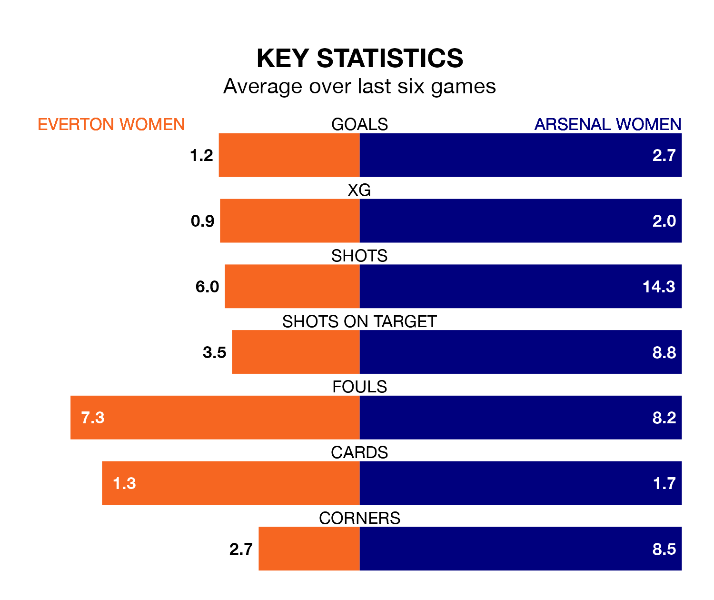

Everton Women host Arsenal Women in Sunday lunchtime's match at Walton Hall Park looking to bounce back from defeat last time out in the FA Women's Super League.
The Toffees, who sit ninth in the league after 19 games, fell to a 1-2 away defeat to Brighton and Hove Albion Women on April 19.
They face an Arsenal side who picked up a win in their last match, a 3-0 victory against Leicester City WFC, and who sit third in the table.
With 17 goals in 19 games so far this season, Everton are the league's joint-second-lowest scorers with 0.9 goals per game. And they are conceding more than average, letting in 34 goals at a rate of 1.8 per game.
Arsenal, meanwhile, are above average scorers, with 2.4 goals per game, compared to a league average of 1.7. They have conceded 0.9 goals per game.
In the last 10 years, Everton and Arsenal have played each other on 16 occasions. Arsenal won all of them.
On average, the Toffees scored 0.5 goals and the Gunners 2.5 in those matches.
Their last meeting was on January 20, when Arsenal won 2-1 at home.
The Toffees are in mixed form in the FA Women's Super League, with two wins and a draw from their last six games.
With five wins and one loss over that period, the Gunners's form is much better – they have taken 15 points from 18, compared to the hosts' seven.
In Alessia Russo, the away side have one of the league's most on-form strikers so far this season. She has notched nine goals in 19 appearances, to sit fourth in the scoring charts.
Everton's top scorers, with three goals in 18 games each, are Aurora Galli and Megan Finnigan.
Updated: 07:59 (UTC), 26/04/24